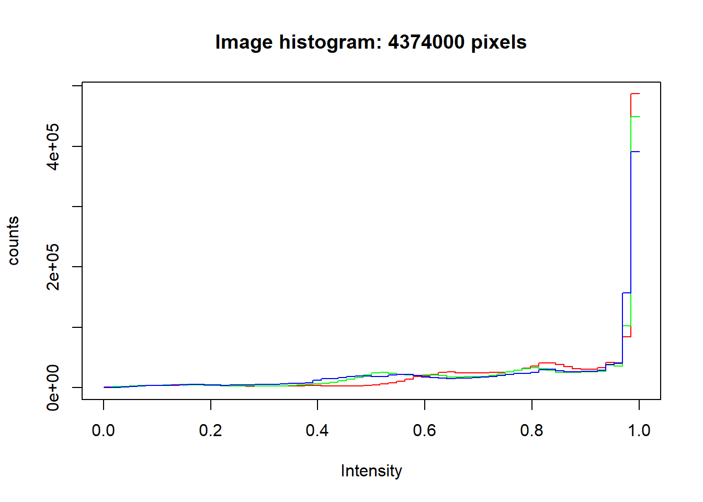
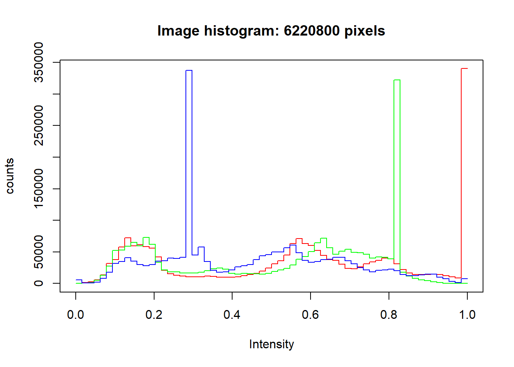
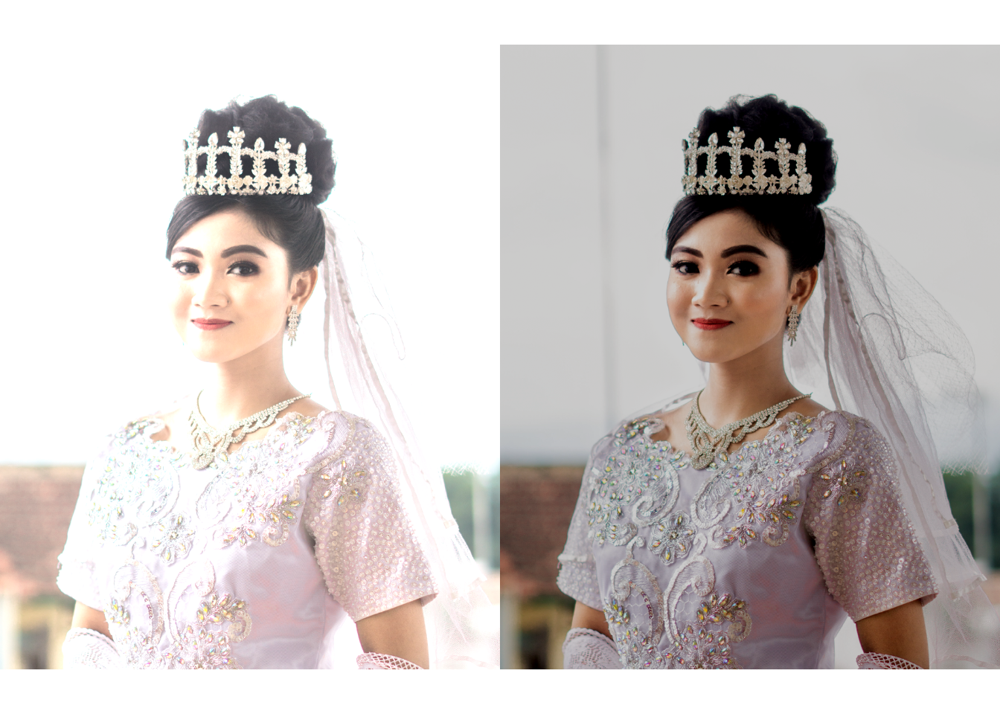
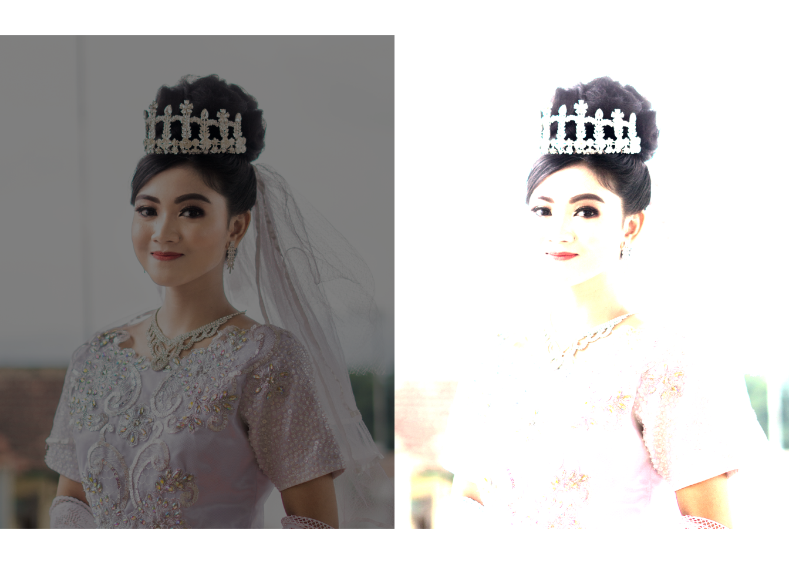
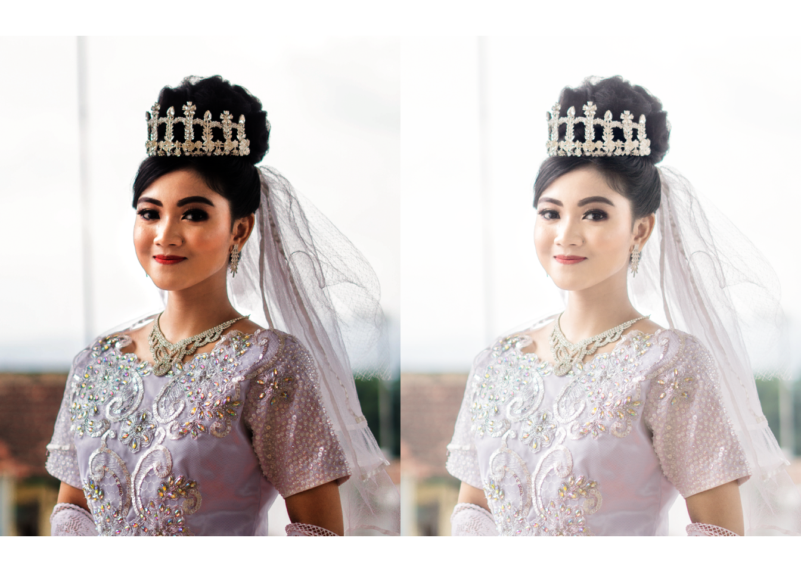
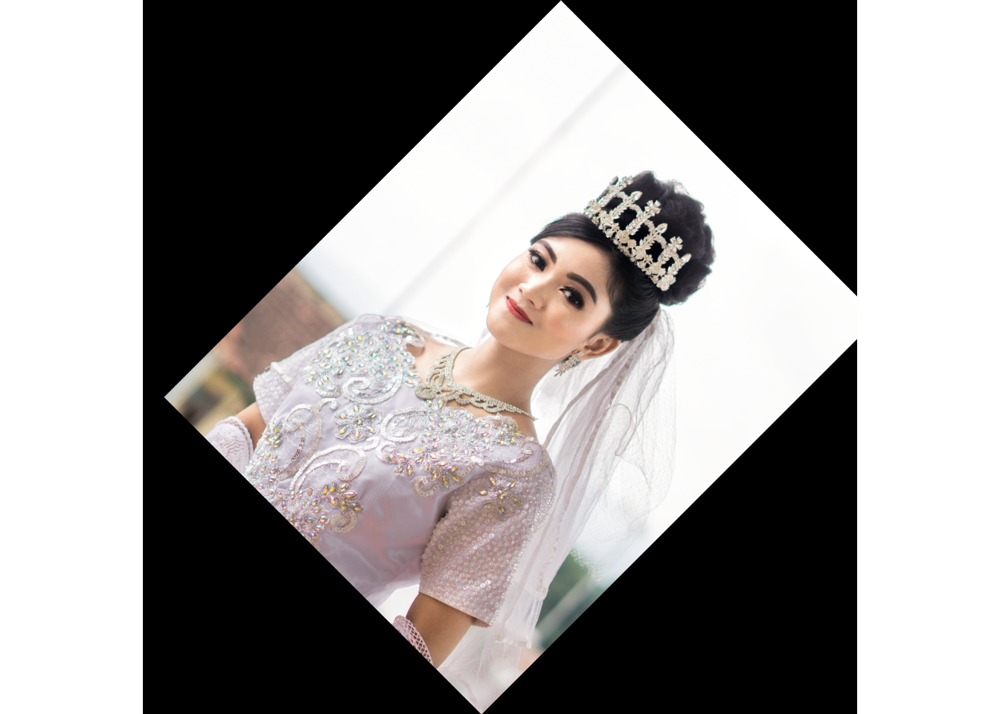
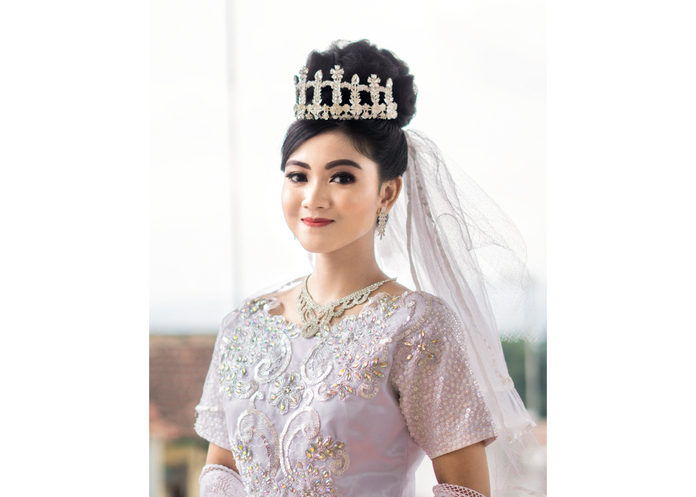
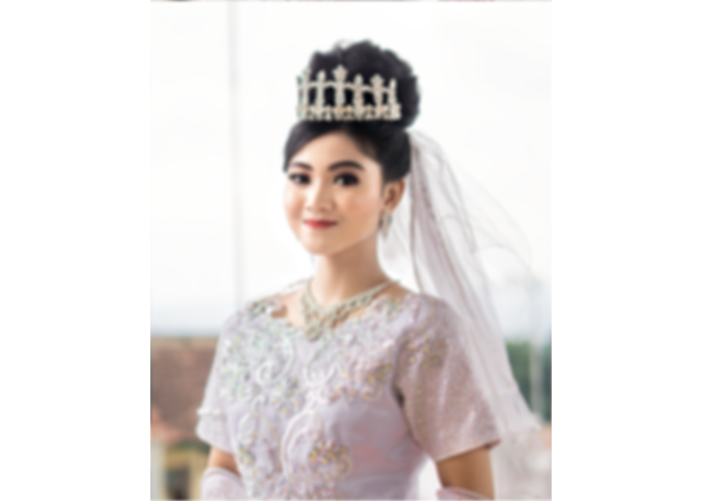

#Install EBImage
if (!requireNamespace("BiocManager", quietly = TRUE))
install.packages("BiocManager")
BiocManager::install("EBImage")## Bioconductor version 3.12 (BiocManager 1.30.10), R 4.0.3 (2020-10-10)## Installing package(s) 'EBImage'## package 'EBImage' successfully unpacked and MD5 sums checked## Warning: cannot remove prior installation of package 'EBImage'## Warning in file.copy(savedcopy, lib, recursive = TRUE): problem copying C:
## \Users\LENOVO\Documents\R\win-library\4.0\00LOCK\EBImage\libs\x64\EBImage.dll
## to C:\Users\LENOVO\Documents\R\win-library\4.0\EBImage\libs\x64\EBImage.dll:
## Permission denied## Warning: restored 'EBImage'##
## The downloaded binary packages are in
## C:\Users\LENOVO\AppData\Local\Temp\RtmpqsXYhi\downloaded_packages## Installation path not writeable, unable to update packages: boot, class,
## cluster, codetools, foreign, KernSmooth, MASS, Matrix, mgcv, nlme, nnet,
## spatial, survival## Old packages: 'RCurl', 'tiff', 'xfun'#Read Image
setwd("C:/Agung")
library(EBImage)
Image <- readImage("C:/Agung/1.1.png")
Images <- readImage("C:/Agung/thumbnail.png")#Plot Data
hist(Image)
hist(Images)
Nah setelah itu kalian dapat melakukan pengaturan kecerahan, penyesuaian kontras, koreksi gamma, memotong gambar, menggabungkan gambar, mengatur tegak miringnya gambar, mengatur warna, mengatur filter,dll.
Di pertemuan kali ini saya akan membahas seperti berikut ini.
#Brightness
Image1 <- Image + 0.2
Image2 <- Image - 0.2
par(mfrow= c(1,2))
plot(Image1)
plot(Image2)
#Adjusting Contrast
a <- Image * 0.5
b <- Image * 2
par(mfrow= c(1,2))
plot(a)
plot(b)
#Gamma Correction
hmm <- Image ^ 2
hmmm <- Image ^ 0.7
par(mfrow= c(1,2))
plot(hmm)
plot(hmmm)
#Cropping
crop <- Images[1000:500, 600:400,]
display(crop)#Spacial Tranformation
Imagetr <- translate(rotate(Image, 45), c(50, 0))
display(Imagetr)
#Color Management
colorMode(Image) <- Grayscale
display(Image)## Only the first frame of the image stack is displayed.
## To display all frames use 'all = TRUE'.print(Image)## Image
## colorMode : Grayscale
## storage.mode : double
## dim : 1080 1350 3
## frames.total : 3
## frames.render: 3
##
## imageData(object)[1:5,1:6,1]
## [,1] [,2] [,3] [,4] [,5] [,6]
## [1,] 0.9921569 0.9921569 0.9921569 0.9921569 0.9921569 0.9921569
## [2,] 0.9921569 0.9921569 0.9960784 0.9921569 0.9921569 0.9921569
## [3,] 0.9960784 0.9960784 0.9921569 0.9921569 0.9921569 0.9921569
## [4,] 0.9921569 0.9921569 0.9960784 0.9921569 0.9921569 0.9921569
## [5,] 0.9960784 0.9921569 0.9921569 0.9921569 0.9921569 0.9921569colorMode(Image) <- Color
display(Image)
#LowPass-Filtering
flow <- makeBrush(21, shape = 'disc', step = FALSE)^2
flow <- flow/sum(flow)
Image.flow <- filter2(Image, flow)
display(Image.flow)
#HighPass-Filtering
fHigh <- matrix(1, nc = 3, nr = 3)
fHigh[2, 2]<- -5
Image.fHigh <- filter2(Image, fHigh)
display(Image.fHigh)#Noise Reduction
Image <- readImage("C:/Agung/1.1.png")
medFltr <- medianFilter(Image, 1.1)
display(medFltr)Keterangan:
#LowPass-Filtering -> Digunakan untuk menge-blurkan gambar
#HighPass-Filtering -> Digunakan untuk memberi noise pada gambar
#Noise Reduction -> Digunakan untuk menghilangkan noise gamba